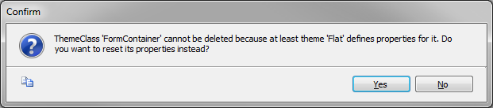

As of GeneXus X Evolution 3, Theme classes create cross references, allowing the user and GeneXus to know which objects reference a given class. This new feature includes certain considerations to be taken into account when we work with Themes classes. Creating a new Theme ClassWhen we create a new class on a Theme, this new class will be added to all Themes, inheriting the corresponding parent class properties for each Theme. By default, this class is only visible on the same kind of Themes. For instance, if you create a new class on a Web Theme, it is only visible on the remaining Web Themes. Updating a Theme ClassWhen we update a Theme class:
Deleting a Theme ClassWhen we want to delete a Theme class:
Note: When we try to delete a class that is not referenced by any control but has properties defined in other Themes, we will get the following message:  The Yes option sets as default all the properties of the class in the current Theme. To delete the class from the Knowledge Base, we must go through every Theme and clean all properties for that class. See Also
|
| Backlinks |
| References |